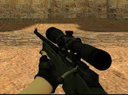
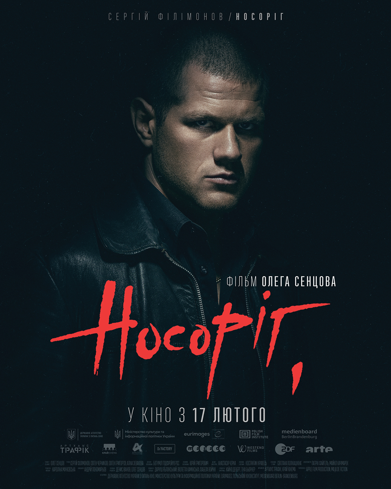
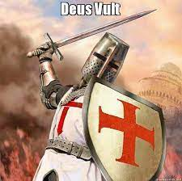

ітак, довго не місячи глину, і не придумавши нічого розумного, гуглимо сьогднішню дату 22 вересня
Домашка №5
...йшла 5та домашка...
...відчуівю себе повністю розбитим...
...задача таж сама, зверстати статтю, але при спробі "вичавити щось з-під пера", лізе з іншого місця...
Прийшов час підглянути в гуглі
Всесвітній день захисту слонів.
День цих пацанів
Всесвітній день носорога.
День цих пацанів
День без автомобілів
День без цих пацанів
П’ятниця 13го
День, коли заканцелили цих пацанів
До речі, до сьогодні я думав, що це сталося в п’ятницю 13го. Подвійна корисність від домашки.
